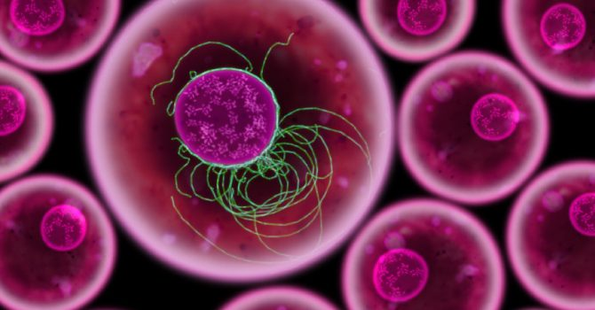

Diferenciación celular.
Proceso durante el cual las células jóvenes , inmaduras (no especializadas) adaptan las características individuales y alcazan su forma y función maduras (especializadas).
Moore, K. L., & Dalley, A. F. (2013). Anatomía con orientación clínica, Barcelona, España, Lippincott Williams & Wilkinis. Capítulo 1. Métodos para el estudio de la anatomía pag 2-5